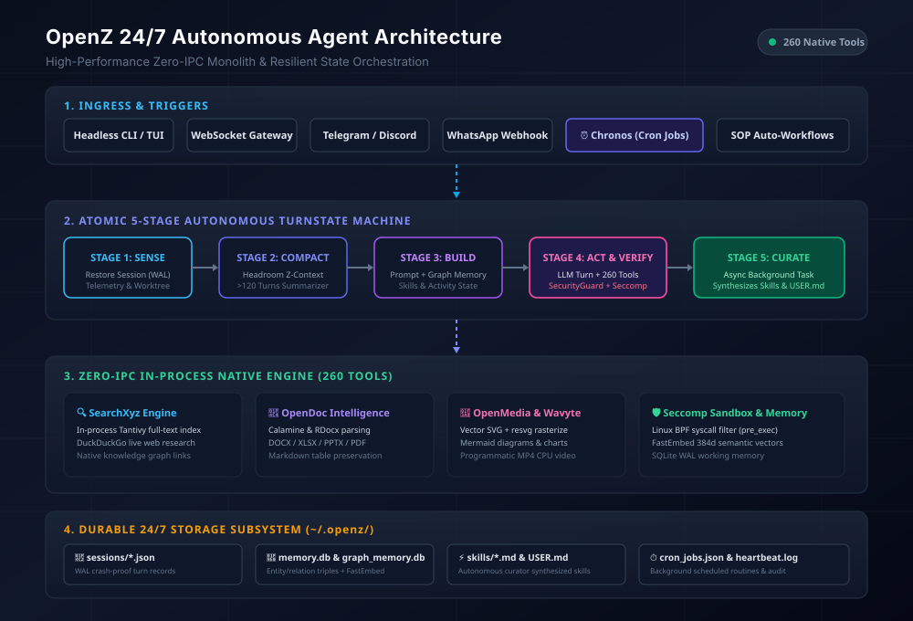

High-performance, async personal AI agent framework in Rust. Monolithic zero-IPC architecture compiling 260 native tools directly into a crash-resilient autonomous daemon.

| Tool Identifier | Category | Safety / Sandbox | Description |
|---|---|---|---|
searchxyz_search_web |
SearchXyz | Read-Only | In-process keyless DuckDuckGo web search engine with snippet extraction |
searchxyz_index_content |
SearchXyz | Safe | Ingests documents directly into local Tantivy full-text search index |
searchxyz_query_graph |
SearchXyz | Read-Only | Traverses entity knowledge graph edges with multi-depth neighbor search |
opendoc_create_docx |
OpenDoc | Safe | Generates Microsoft Word (.docx) documents with headings, paragraphs, styling |
opendoc_create_xlsx |
OpenDoc | Safe | Builds structured Excel spreadsheets with multi-sheet and table support |
opendoc_read_document_text |
OpenDoc | Read-Only | Extracts plain text and preserves markdown table structures from office documents |
openmedia_create_svg |
OpenMedia | Safe | Generates vector graphics with SVG elements, shapes, gradients, and typography |
openmedia_diagram_generate_mermaid |
OpenMedia | Safe | Compiles Mermaid flowcharts, sequence diagrams, and class graphs to vector SVG |
openmedia_rasterize_svg |
OpenMedia | Safe | Renders vector SVG to high-DPI raster PNG via resvg and tiny_skia |
generate_video |
Wavyte | Safe | Renders programmatic MP4 videos with animated SVG motion paths and keyframes |
memory_graph_add_relation |
Memory | Safe | Stores subject-predicate-object semantic relations in persistent SQLite graph |
headroom_retrieve_original |
Memory | Gated | Retrieves original uncompressed tool output from CCR cache by content hash |
exec_command |
Shell | Seccomp Sandbox | Executes subprocess commands sandboxed with Linux BPF filters & RLIMIT limits |
schedule_job |
Chronos | Safe | Registers recurring autonomous cron jobs with standard 5-part cron syntax |
Deploy OpenZ as an autonomous system service running continuously under systemd: